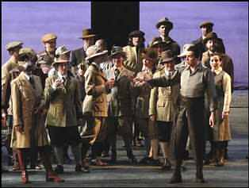

Revista mensual de publicación en Internet
Número 88º - Junio-Septiembre
2.008

|
|
|
Zarzuela con pretensiones de ópera Por Víctor Pliego de Andrés. Lee su curriculum.  La Leyenda del Beso. Música de Reveriano Soutullo y Juan Vert. Libro de Enrique Reoyo, José Silva Aramburu y Antonio Paso (hijo). Reparto: María Rodríguez / Amaparo Navarro, Manuel Lanza / Juan Jesús Rodríguez, Aquiles Machado / Álex Vicens, Ainhoa Aldanondo, Rafa Castejón, Pepa Rosado, Irene Santamaría, Marina Claudio, Esther Ruiz, Borja Elgea, Albert López-Murtra, Raquel Esteve, Fernando Coronado, Rafael Castejón, Amara Carmona, Pedro Bachura, Tomás Sáez, Tony Cruz, Pedro Jerez, Luis E. González, David Martín, Ana Berrocal. Dirección musical: Miquel Ortega / Montserrat Font. Director de escena: Jesús Castejón. Escenografía y figurines: Ana Garay. Dirección del coro: Antonio Fauró. Iluminación: Eduardo Bravo. Coreografía: Nuria Castejón. Coro y Orquesta del Teatro de la Zarzuela. Producción del Teatro de la Zarzuela. Teatro de la Zarzuela de Madrid, del 25 de abril al 25 de mayo de 2008. La Leyenda del Beso es una zarzuela de 1924, grande, sería y de oscuro trasfondo. Hay en su dramatismo cierto anhelo de ser ópera, tanto en el argumento como en la partitura. La puesta en escena que Jesús Castejón ha realizado para esta nueva producción del Teatro de la Zarzuela enfatiza ese mundo sombrío, de pasiones desatadas, aunque inserta algunos números cabareteros, no sé si por capricho o por necesidades de mutación, que suscitan un interesante contraste. Son recursos ya conocidos, que si bien no sorprenden a los habituales de esta sala, si que divierten, aligeran y amenizan. La escenografía diseñada por Ana Garay es extraña, incómoda y desasosegante, con una iluminación demasiado escasa para mi gusto. Todos los abundantes intérpretes, actores, cantantes, bailarines y figurantes, actuaron estupendamente, aunque a veces hubo un poco de lío con el movimiento de tantos grupos. En el segundo reparto, escuchamos voces tan magníficas como la de Juan Jesús Rodríguez, en el papel de Mario, o la de Amparo Navarro como Amapola. Ella tiene un magnífico fraseo y el punto dramático que conviene al personaje; él una línea clara, precisa y segura. En general, todo el elenco ofreció sus personajes con buena voz y buena presencia. La orquesta, bajo las órdenes de Miquel Ortega, tapó algunos parlamentos cruciales, causando protestas justificadas del público el día que asistí. El coro del teatro, que suele tener una participación sensacional, estuvo colocado demasiado atrás como para lucirse a su gusto, e intervino con unos panderos destemplados que no son de recibo. Aunque las percusiones eran simples, faltó asesoramiento en este punto. La coreografía realizada para el célebre intermedio fue resultona y gustó bastante. El espectáculo no salió perfecto, pero sí alcanzó un estimable mérito en términos generales, dado que resolvió con suficiencia los retos que este título entraña. Fotografía: Jesús Alcántara
|